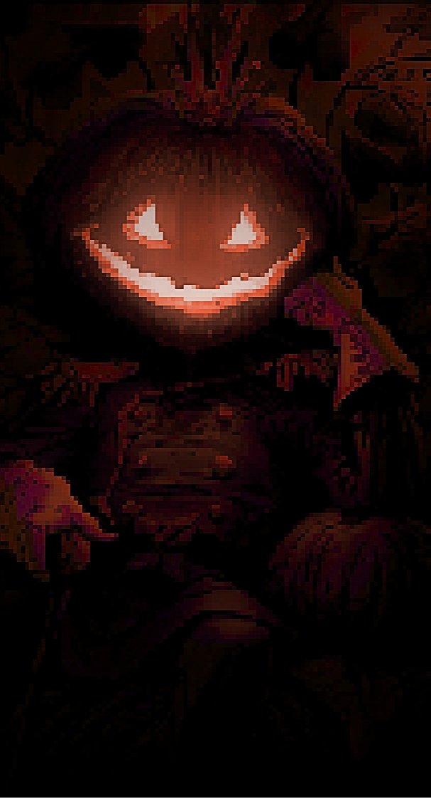
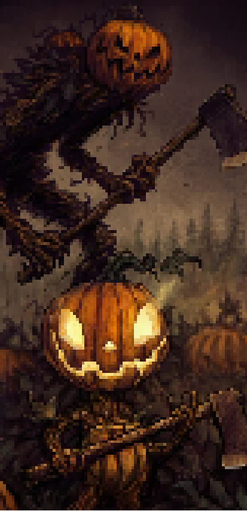

Jack era um alcoólatra que, ao ser confrontado pelo diabo, consegue enganá-lo para ganhar mais tempo na Terra,
prometendo se comportar melhor. Jack faz um trato com o diabo, mas sua boa conduta é temporária. Quando o diabo volta,
Jack o engana novamente, conseguindo mais dez anos de liberdade.
Porém, ao morrer, Jack é rejeitado tanto no céu, e após chegar no inferno, Jack encontra o diabo, que o rejeita e lhe dá uma brasa
para iluminar seu caminho no limbo.
Jack coloca a brasa dentro de um nabo para que dure mais.
Assim, sua alma se torna conhecida como Jack O'Lantern. Originalmente, na Irlanda, nabos eram usados como lanternas, mas, ao chegar à América,
imigrantes começaram a usar abóboras, que eram mais abundantes. Essa prática deu origem à tradição de esculpir e iluminar abóboras no Halloween.
A lenda diz que, quem presta atenção e consegue ver uma pequena luz fraca na noite de 31 de
outubro, é porque conseguiu ver a passagem de Jack procurando uma saída do limbo em que
está preso. Boa sorte caso o encontre.

Charles ••• Guilherme ••• Gustavo ••• João Pedro ••• João Fernando ••• Yasmin